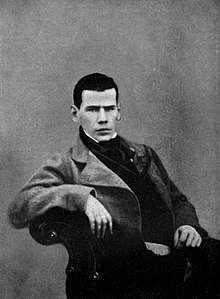

Lev Tolstoy (1828-1910)
Major works
- Sevastopol Tales (1855) - unheroic depiction of war
- War and Peace (1869) - serialized historical novel, published in The Russian Messenger (Crime and Punishment also published here)
- Anna Karenina (1878)
- 1878 - spiritual crisis; published Confession in 1882 - becomes philosopher (Christian anarchist; rejection of any government or organized religion as the source of social evil) and pacifist
- Death of Ivan Ilyich (1886)
- Hadji Murat (1912) - Christian anarchist anti-colonial novella
- by end of his life writing primarily short stories --> reflects trend toward end of novel
